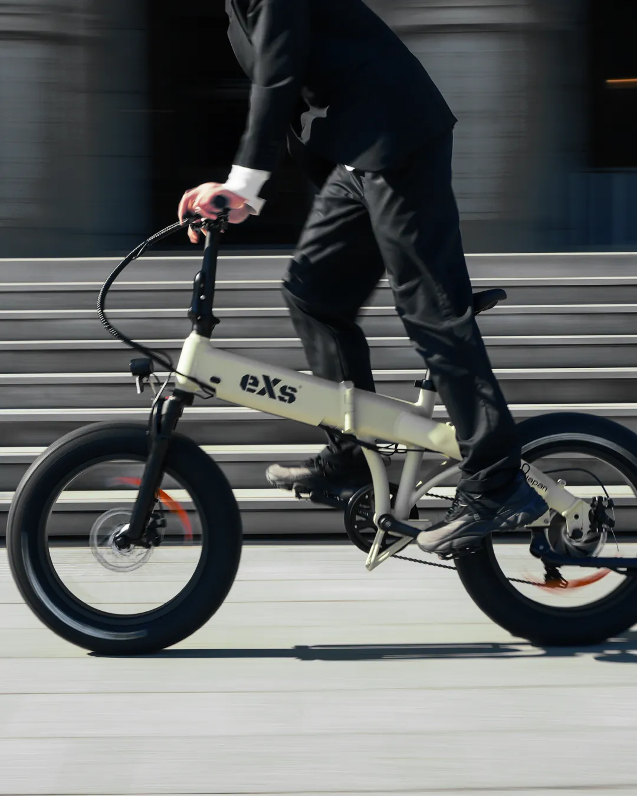
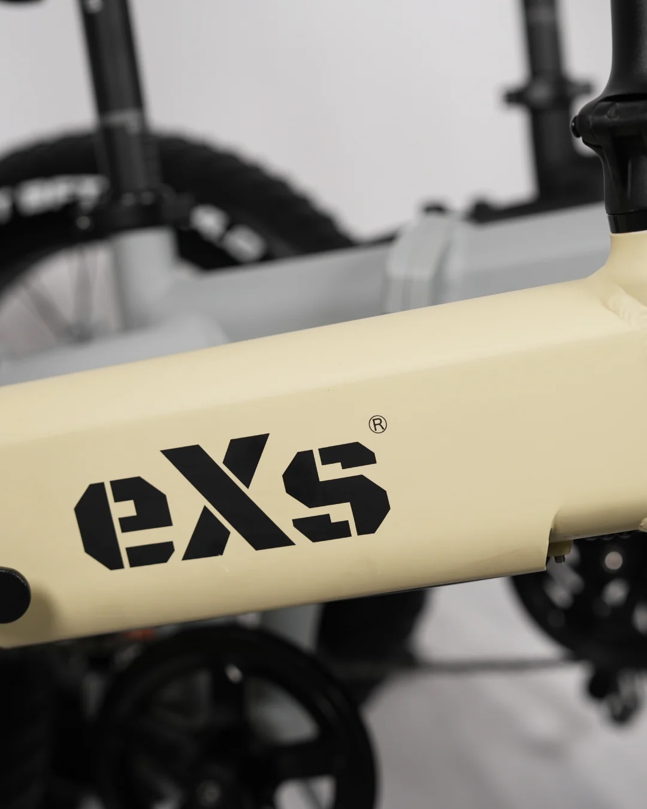
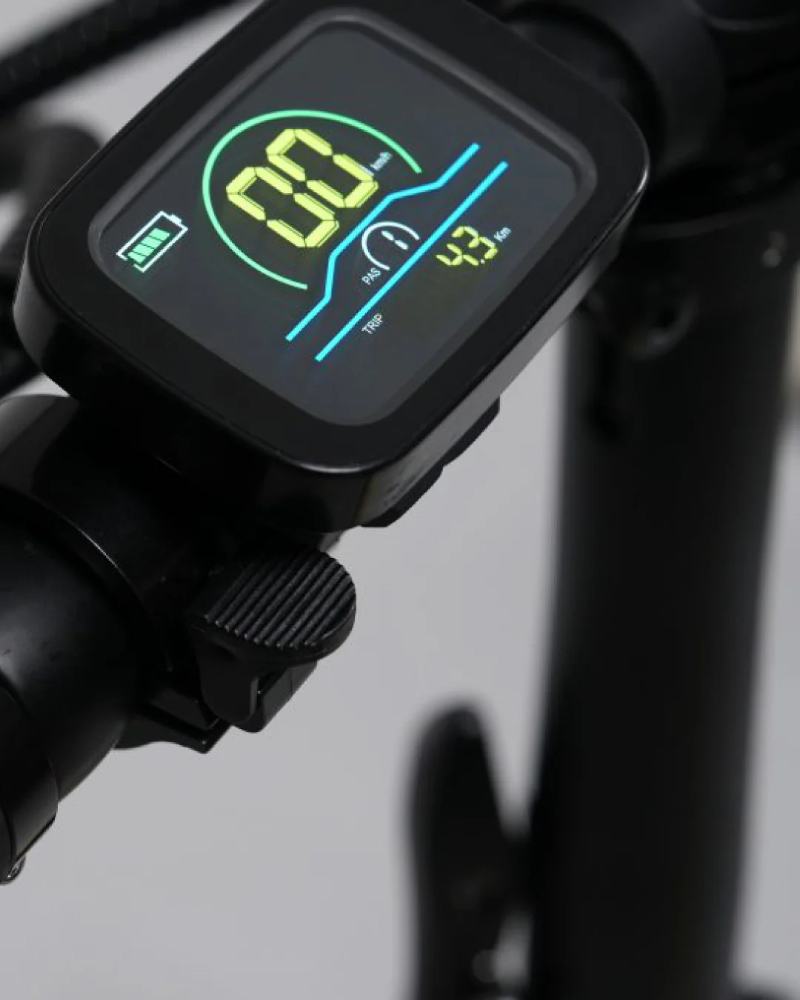
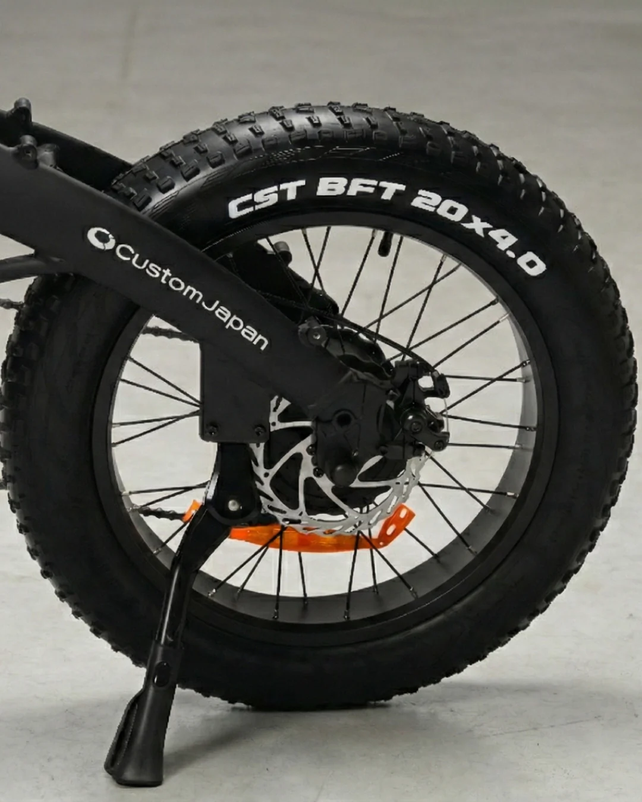

eXs Street
ELECTRIC ASSIST BICYCLE
20×4インチのファットタイヤで、街乗りもオフロードも。日常の移動を冒険に変える、パワフルなアシスト性能と洗練されたデザイン。
※ 現在、注文から発送まで約1週間いただいております。
※ 送料無料キャンペーン実施中 ※沖縄・離島は別途送料 ¥11,000がかかります
※ 全国一律:¥5,500(税込) / 沖縄・離島:¥11,000(税込)
SPECIFICATIONS+
WARRANTY & SUPPORT+
保証期間について
本体フレーム・モーター・バッテリー：ご購入日より1年間
消耗品（タイヤ、ブレーキパッド等）は保証対象外となります。
アフターサポート
全国の提携メンテナンス店にて修理・点検が可能です。
FAQ+
法規・ルール +
運転に免許・ナンバープレートは必要ですか？ +
いいえ、必要ありません。eXs Streetは道路交通法の基準を満たした「電動アシスト自転車」ですので、通常の自転車と同様に免許・ナンバープレート不要でお乗りいただけます。
防犯登録は必要ですか？ +
はい、法律により義務付けられています。製品に同梱されている「販売証明書」と身分証明書をお持ちの上、お近くの「自転車防犯登録所」の看板がある自転車店等にて登録手続きを行ってください。
※車体番号は左右クランクの内側（2箇所）に記載されています。
型式認定は取得していますか？ +
現在、型式認定の申請準備中です。ただし、アシスト比率（ペダルを漕いだときのモーター出力の割合）については、専門機関による試験を実施しており、日本の法令（道路交通法・道路運送車両法）に適合していることを確認済みです。
アクセル（スロットル）は付いていますか？ +
いいえ、付いていません。電動アシスト自転車の基準に適合させるため、アクセルは搭載しておらず、後付けもできません。
車道・歩道はどこを走ればいいですか？ +
通常の自転車と同様、原則として「車道の左側」を走行してください。「自転車通行可」の標識がある歩道のみ走行可能です。
自転車保険に加入できますか？ +
はい、一般的な自転車保険の対象となります。詳細はご契約予定の保険会社へご確認ください。
購買・保証 +
配送方法と送料は？ +
佐川急便にてお届けいたします。送料は全国一律：税別5,000円（沖縄・離島は税別10,000円）です。納期は地域により1〜6日程度となります。
返品・キャンセルはできますか？ +
商品到着後7日以内にご連絡いただければ、キャンセルポリシーに基づき返品可能です。ただし、一度でも走行した車両、開封済みの商品（未開封のみ可）、到着後8日以上経過した商品は返品・交換の対象外となります。
保証内容を教えてください +
初期不良：到着後14日以内
部品保証：ご購入日から6ヶ月間（フレーム、モーター、バッテリー等）
※タイヤ、ブレーキパッドなどの消耗品や、転倒・誤使用による故障は対象外です。
修理はどこでできますか？ +
eXs取扱店（さがサイクル、センバガレージ、E-WALK Mobility等）または、お近くの自転車店・自転車メンテナンス専門店へご相談ください。最寄りの店舗で対応が難しい場合は、出張整備サービスのご利用もご検討ください。
組み立て・メンテナンス +
組み立ては必要ですか？（初心者でも可能？） +
9分組（ほぼ完成した状態）でお届けするため、簡単な組み立てが必要です。付属の工具を使用し、初心者の方でも組み立て可能です。手順を解説した動画もご用意しております。
適正空気圧と空気入れについて +
適正空気圧は30psi（2.0bar / 200kPa）です。バルブは米式（アメリカンバルブ）を採用していますので、米式対応のゲージ付き空気入れをご使用ください。
空気が入りにくい・タイヤトラブルについて +
ファットタイヤは大容量のため、手動ポンプでは多くの回数が必要です。空気が入らない場合は、ポンプの接続を確認してください。また、空気圧不足のまま走行すると「バルブ根元の裂け」や「タイヤのひび割れ」の原因となります。月に1〜2回の空気圧チェックを推奨します。
操作・仕様 +
アシストが弱い気がする／自力走行は可能？ +
法令遵守と安全のため、アシスト出力は滑らかに設定されています。またファットタイヤの特性上、通常の自転車より走行抵抗を感じる場合があります。電源オフでの自力走行も可能ですが、車重があるため少し重く感じられます。
防水性能はありますか？ +
車体はIPX4、電装部品はIPX5相当の生活防水ですが、完全防水ではありません。雨天時の走行や水たまり、高圧洗浄機の使用は故障の原因となりますのでお控えください。
適応身長・体重制限・チャイルドシートについて +
適応身長の指定はありません。耐荷重は100kgです。構造上および安全上の理由から、チャイルドシートの取り付けやお子様の同乗はできません。
ライトの点灯方法・その他機能 +
ライトは手動です。アシスト操作パネルの「+」ボタンを長押しで点灯/消灯します。
また、フロントフォークの「ABS+」ノブでサスペンションの硬さを、「Preload」ノブで沈み込み具合を調整可能です。
変速ギアの操作について +
外装変速機のため、必ずペダルを漕ぎながら変速してください。停車中に変速操作を行うと故障の原因になります。チェーン外れ等は自転車店での調整をおすすめします。
バッテリー・充電 +
バッテリーの寿命と走行距離は？ +
寿命は約500回の充電サイクルで、新品時の約60%まで容量が減少します。1回の充電（約6時間）で最大60km〜80kmの走行が可能ですが、モードや環境により変動します。
充電方法について +
バッテリーを取り外して室内で充電することも、車体に装着したまま直接充電することも可能です。必ず付属の専用充電器を使用し、家庭用コンセントで行ってください。
バッテリーが取り外せないときは？ +
フレーム底面（前方側）にある固定用ボルトが強く締まりすぎている可能性があります。付属の六角レンチ（2.5mm）で少し緩めるとスムーズに取り出せます。
その他 +
実店舗での取り扱いや試乗は？ +
一部の提携店舗（さがサイクル、センバガレージ、E-WALK Mobility等）にて実車の確認が可能です。試乗の可否は店舗により異なりますので、事前に直接お問い合わせください。
ダンボール箱は捨ててもいいですか？ +
捨てずに保管してください。修理等でメーカーへ返送する際に専用の箱が必要になります。手元にない場合は有料での手配となります。
スペアキーは作れますか？ +
はい、ご注文いただけます。バッテリー鍵穴付近の鍵番号が分かる写真を添えてお問い合わせください。
THE STREET RIDE

20×4インチのファットタイヤで
街乗りもオフロードも。
存在感のある極太タイヤは、単なるデザインではありません。路面の凹凸を吸収し、段差の多い市街地から砂利道などのオフロードまで、あらゆるシーンで安定した走行を実現します。

都市に溶け込む、
洗練されたマットカラー。
光の反射を抑えたマット塗装を採用。「マットブラック」「マットグレー」「マットベージュ」の3色は、どんなファッションや都市の風景にも馴染みます。


走りを支える
最新のコンポーネント。
-
A
コンパクトLCDディスプレイ
速度、バッテリー残量、走行距離を一目で確認。
-
B
FRONT FORK (フロントフォーク)
路面からの衝撃を和らげ、タフな走りを支えるフロントフォーク。
-
C
Shimano 7段変速
アシストオフ時でも快適に走行できる信頼のシマノ製ギア。